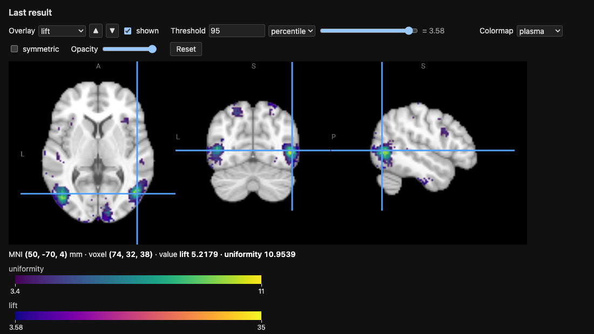

Neurosynth’s Association and Uniformity Tests as Probability Ratios#
Neurosynth [yarkoni2011] maps each term with two tests on the counts of studies activating each voxel:
the uniformity test (formerly “forward inference”): is the proportion of the studies of the term activating the voxel different from its average over the brain?
the association test (formerly “reverse inference”): are the term and the activation of the voxel independent? The map comes with the posterior probability of the term given the activation, for a uniform prior of 0.5.
Both are \(\chi^2\) tests, and both reduce to a ratio of probabilities
which is 1 when there is no effect. With selected_study the uniform
choice over the \(N\) studies of the neurosynth engine, every
probability of a query is a count of studies divided by \(N\), so
these ratios are queries of the engine.
The ratios#
Let \(T\) be the event that the selected study has the term and \(A_v\) that it activates the voxel \(v\).
Association. \(T\) and \(A_v\) are independent if and only if the lift
is 1, and the \(\chi^2\) statistic of the test is \(N\) times the squared distance of the lift to 1:
The relative risk \(RR_v = P(A_v \mid T) / P(A_v \mid \lnot T)\) is also 1 under independence, and Neurosynth’s posterior for a prior of 0.5 is \(RR_v / (1 + RR_v)\).
Uniformity. The average over the \(M\) voxels of the mask of
\(P(A_v \mid T)\) is itself a probability: with selected_voxel a
uniform choice over the voxels and \(V\) the voxel it selects, it is
\(\bar p = P(A_V \mid T)\), the probability that the selected study
activates the selected voxel, given the term. The ratio
is 1 under uniformity, and, with \(N\, P(T)\) the number of studies of the term,
Predefined in the engines#
The neurosynth and neurostore engines define these ratios for any
term, so that a query is one line, with the term as a constant (the engine then
computes the rules for it only):
ans(i, j, k, uniformity) :- uniformity('working memory', i, j, k, uniformity)
ans(i, j, k, lift) :- lift('vision', i, j, k, lift)
ans(i, j, k, lift, relative_risk, uniformity) :-
ratios('pain', i, j, k, lift, relative_risk, uniformity)
lift, relative_risk, uniformity and ratios are the quantities
of the previous section, as predicates (term, voxel, ratio…), and they are
listed by --list-predicates. Their definitions are the rules of the
next section, with three differences: a term is in a study when its TF-IDF is
above 0.001 (term_in_study), a study activates the voxels of the whole
brain within 6 mm of its peaks (activated; brain_mask), and the
average of the uniformity test is over the brain rather than over
cortical_mask, so that the subcortical structures, the cerebellum and
the hippocampus are in the map; selected_voxel is the uniform choice over
the voxels of the brain. The maps of working memory take about ten seconds
for the uniformity ratio and half a minute for the three ratios on the 2 mm
grid. In the neurostore engine the terms are those of
its TF-IDF. A probabilistic query needs
the term as a constant: without one the rules cannot be rewritten for it.
Free-text queries#
The same ratios exist for a free text instead of a term, with the suffix
_llm: uniformity_llm, lift_llm, relative_risk_llm and
ratios_llm. The studies of the “term” are then the 5% of the studies
closest to the text, by the cosine similarity of the SPECTER2 embeddings of
their title and abstract to the text (see Semantic Search Over Study Abstracts):
ans(i, j, k, u) :- uniformity_llm('cortical response to noxious heat applied to the skin', i, j, k, u)
study_similarity(text, study, similarity) gives the similarity of every
study with a text, and similar_study(text, study) the studies of the top
5%, which one can use in rules of one’s own. As for a term, the text is a
constant of the query. Neither it nor the predicates can be computed for
every text, so they are left out of solve_all. The first query embeds the
abstracts (the model, about 430 MB, and the embeddings are cached; see
Semantic Search Over Study Abstracts to compute them ahead of time) and needs
pip install "neurolang[embeddings]".
SPECTER2 is for descriptions that do not contain the term: for a keyword,
its TF-IDF, that is uniformity('pain', ...), is the better selection. On
36 Neurosynth terms described by three sentences that contain neither the
term nor its variants, the map of the studies close to the text identified the
term among the 36 first in about a third of the cases, against a fifth for the
TF-IDF of the same sentence.
In the REPL#
Neurosynth works on the 2 mm MNI grid, a study activating the voxels
within 6 mm of its peaks, and a term being in the studies with a TF-IDF
above 0.001. Start the REPL of the neurosynth engine on the 2 mm
grid:
python -m neurolang.utils.cli -e neurosynth -d neurolang_data -r 2 -i
and paste this block at the prompt. It computes the lift and the
uniformity ratio of the term vision over the voxels of
cortical_mask, shows the five voxels of the largest uniformity
ratios, and opens both maps in the viewer. Each line is preceded by a
% comment saying what it computes, which the REPL skips:
% T: the selected study has the term t, its TF-IDF being above 0.001
term_in_study(s, t) :- term_in_study_tfidf(s, t, w) & (w > 0.001)
% A_v: the study s activates the voxel (i, j, k) of the cortex, within 3 voxels (6 mm) of one of its peaks
activation(i, j, k, s) :- cortical_mask(i, j, k) & peak_reported(i1, j1, k1, s) & (EUCLIDEAN(i, j, k, i1, j1, k1) <= 3)
% M: the number of voxels of the cortex
n_voxels(count(i, j, k)) :- cortical_mask(i, j, k)
% V: a uniform choice over the voxels of the cortex, each of probability 1 / M
selected_voxel(i, j, k) ^ (1 / m) :- cortical_mask(i, j, k) & n_voxels(m)
% P(A_v): the probability that the selected study activates the voxel
p_a(i, j, k, PROB) :- activation(i, j, k, s) & selected_study(s)
% P(T): the probability that the selected study has the term, the proportion of the studies with it
p_term(t, PROB) :- term_in_study(s, t) & selected_study(s)
% P(A_v | T): the probability that a study with the term activates the voxel
p_a_given_t(t, i, j, k, PROB) :- (activation(i, j, k, s) & selected_study(s)) // (term_in_study(s, t) & selected_study(s))
% P(A_V | T): the same for the selected voxel, the average of P(A_v | T) over the cortex
p_any_voxel_given_t(t, PROB) :- (activation(i, j, k, s) & selected_voxel(i, j, k) & selected_study(s)) // (term_in_study(s, t) & selected_study(s))
% the lift P(A_v | T) / P(A_v), the relative risk P(A_v | T) / P(A_v | not T) and the uniformity ratio P(A_v | T) / P(A_V | T)
ratios(t, i, j, k, lift, relative_risk, uniformity) :- p_a_given_t(t, i, j, k, pat) & p_a(i, j, k, pa) & p_term(t, pt) & p_any_voxel_given_t(t, pbar) & (lift == pat / pa) & (relative_risk == pat * (1 - pt) / (pa - pat * pt)) & (uniformity == pat / pbar)
% sort the results by decreasing uniformity ratio
.sort uniformity:desc
% show the first 5 rows
.head 5
% the ratios of the term vision: magic sets compute the rules above for it only
ans(i, j, k, lift, uniformity) :- ratios("vision", i, j, k, lift, relative_risk, uniformity)
% open the lift and uniformity maps in the viewer
.view
The REPL runs the rules as one submission, then each dot-command and the query in turn, and prints the following; on a terminal, it opens the viewer in the browser rather than telling to:
defined term_in_study/2
defined activation/4
defined n_voxels/1
defined selected_voxel/3
defined p_a/4
defined p_term/2
defined p_a_given_t/5
defined p_any_voxel_given_t/2
defined ratios/7
Running query...
╭────┬────┬────┬───────────────────┬────────────────────╮
│ i │ j │ k │ lift │ uniformity │
├────┼────┼────┼───────────────────┼────────────────────┤
│ 74 │ 32 │ 38 │ 5.217901365952598 │ 10.953869296339628 │
│ 73 │ 32 │ 36 │ 5.121273562879402 │ 10.953869296339628 │
│ 72 │ 32 │ 37 │ 5.55224704372663 │ 10.576149665431366 │
│ 74 │ 32 │ 37 │ 4.917084854014599 │ 10.198430034523103 │
│ 73 │ 32 │ 38 │ 5.05757299270073 │ 10.198430034523103 │
╰────┴────┴────┴───────────────────┴────────────────────╯
102691 rows · showing 1–5 · .more for next
Query completed in 14.75 s
Saved NIfTI image to: /var/folders/m_/9f8m55cs45g8_36d1wx67_jc0000gr/T/neurolang_view_6xbrumiu.nii.gz (102691 voxels of the 99×117×95 template grid, value: the max of 'lift' per voxel)
Saved NIfTI image to: /var/folders/m_/9f8m55cs45g8_36d1wx67_jc0000gr/T/neurolang_view_5iz4zp45.nii.gz (102691 voxels of the 99×117×95 template grid, value: the max of 'uniformity' per voxel)
Colormap of 'lift': one-sided, the image has no negative values (--symmetric for a symmetric one).
Colormap of 'uniformity': one-sided, the image has no negative values (--symmetric for a symmetric one).
Saved the viewer to: /var/folders/m_/9f8m55cs45g8_36d1wx67_jc0000gr/T/neurolang_view_r_39o2rq.html
Open it in a browser to see the image.
The comments say what each line computes; some points need more words:
The term is only given in the query,
ratios("vision", ...): magic sets pass the constant"vision"toratios, then top_term,p_a_given_t,p_any_voxel_given_tandterm_in_study, so that the probabilistic rules are only computed for this term. Change it in the query to map another one; the rules stay defined.activationholds the voxels within 6 mm, 3 voxels of the grid, of a peak of each study, theEUCLIDEANdistance being in voxels.p_any_voxel_given_tis \(\bar p = P(A_V \mid T)\), a single probability per term: the selected study and the selected voxel are chosen independently, so it is the average over the \(M\) voxels of \(P(A_v \mid T)\).ratiosdivides the probabilities. The relative risk is computed from them, as \(P(A_v \mid \lnot T) = (P(A_v) - P(A_v \mid T) P(T)) / (1 - P(T))\), rather than with a query conditioned on~term_in_study(s, t), which is slower.
The voxels of the largest uniformity ratios, (74, 32, 38) and
(73, 32, 36) of the grid, are at \((50, -70, 4)\) and
\((48, -70, 0)\) mm in MNI space, in the right lateral occipital
cortex (inferior division), around the motion area MT+ (V5): the
studies of vision activate them 11 times more often than the average
voxel of the cortex.
.view shows each value column of the result as an overlay, here
lift and uniformity, each from the 95th percentile of its
values, with its colormap and colour bar; the read-out gives both values
at the cursor, here at the right lateral occipital cortex:

The Overlay list chooses the map the controls apply to, and
shown hides it; uniformity, drawn over lift, covers it where
both pass their threshold, until ▼ draws it under lift. The voxels without a value, those that no
study of the term activates, are 0 and not drawn; .view --fill 1
gives them the ratio of no effect instead. Add relative_risk to the
head of ans for a third overlay, its infinite values being drawn as
its largest finite one.
The second row of controls sets NiiVue’s display: View shows one
slice, the three slices or the 3D render, Layout lays the three
slices out in a row, a column or a grid, with 3D adding the render;
Drag chooses what a drag with the right button does (contrast, pan
and zoom, measure); the crosshair, the gamma of the background, NiiVue’s
own colour bars, orientation cube and ruler, the radiological
convention, the interpolation and a clip plane of the render have their
controls too. On the views, the keys V and C cycle the views and the
clip planes.
Notes:
The mask is that of
cortical_mask: the average of the uniformity test is over the cortex, whereas Neurosynth’s is over the whole brain.A voxel which no study of the term activates is not in the result: its ratios are 0. The relative risk is infinite at a voxel which only the studies of the term activate.
The lift and the relative risk are largest at voxels which few studies activate, where they are the least stable: weigh them with \(P(A_v)\), or with the \(\chi^2\) statistic above.
T. Yarkoni, R. A. Poldrack, T. E. Nichols, D. C. Van Essen and T. D. Wager. Large-scale automated synthesis of human functional neuroimaging data. Nature Methods 8(8):665–670, 2011.